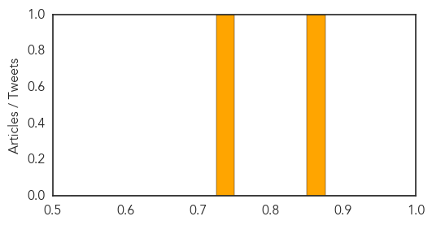

Dengue Fever
30-Day Web Trend
1 alerts, 0 warnings

30-Day Twitter Trend
3 alerts, 0 warnings

Article Locations

Article Confidences

Top Articles:
- 0.970
- Targeting key cells for a dengue virus infection model
- 0.967
- 26-year-old new mom is city’s 10th dengue victim this year
- 0.964
- Fighting dengue: Dengue situation improving, says Nayyar Mehmood
- 0.956
- Latest News & Updates at Daily News & Analysis
- 0.897
- Active volcano prompts concern in central mountains of Costa Rica
- 0.888
- Brazil Fights Dengue With Modified Mosquitoes
- 0.879
- 4,000 Mumbaikars hit by dengue in October, admits BMC
- 0.855
- Doctor claims newborn got viral disease from mother
- 0.811
- World’s first dengue vaccine likely by 2015, says Sanofi
- 0.660
- BMC charges 13,247 for creating dengue hotspots
Top Tweets:
- 0.650
- Flavivirus news: Targeting key cells for a dengue virus infection model - Medical Xpress: Medic... http://t.co/zNVvtMdo8m pathogenposse
Pertussis
30-Day Web Trend
0 alerts, 0 warnings

30-Day Twitter Trend
0 alerts, 0 warnings

Article Locations
Article Confidences
Top Articles:
Top Tweets:
-
No tweets found for Nov 05, 2014